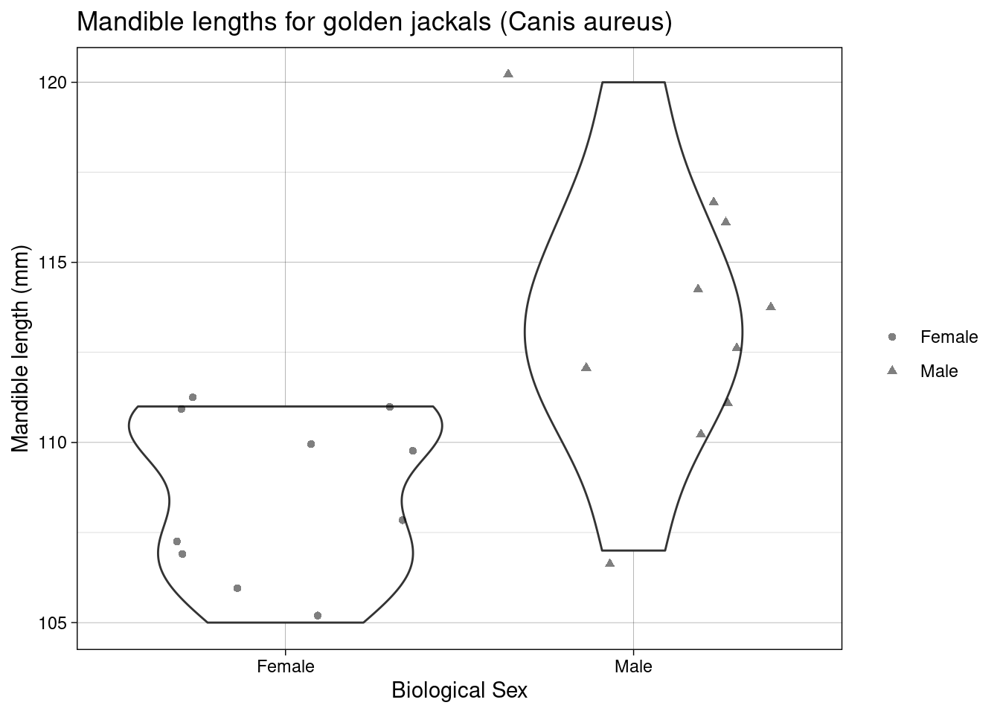
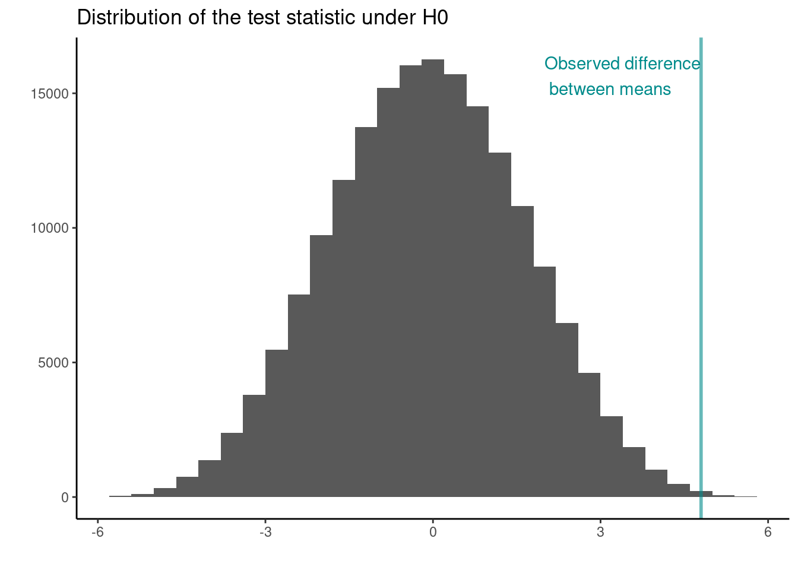
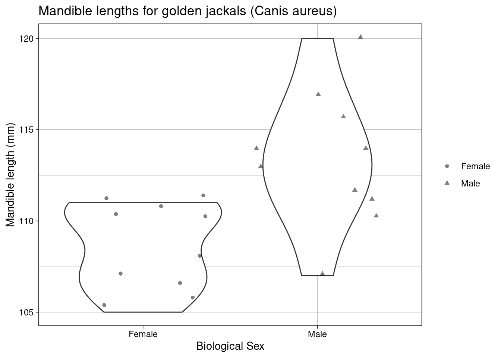
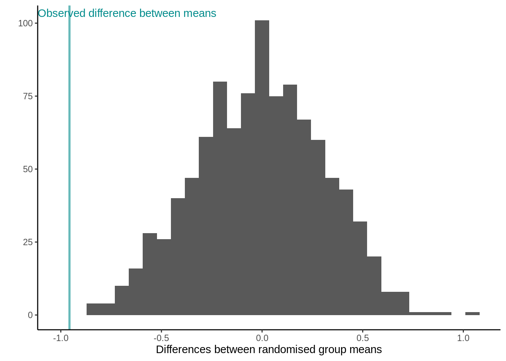

Permutation and randomisation tests
A permutation test is a statistical significance test where the distribution of the test statistic under the null hypothesis is obtained by calculating all possible values of the test statistic under all possible rearrangements of the observed data points. This is also known as an exact test.
Now, often finding all possible combinations is hugely computationally expensive so we harness the power of simulation and carry out a randomisation test, which randomly simulates (for a given number of repetitions) possible values of the test statistic under the null hypothesis to obtain its approximate distribution.
The basic approach to a randomisation tests is straightforward:
- Choose a statistic to measure the effect in question (e.g., differences between group means)
- Calculate that test statistic on the observed data. Note this metric can be anything you wish
- Construct the sampling distribution that this statistic would have if the effect were not present in the population (i.e.,
the distribution under the Null hypothesis, \(H_0\)): For chosen number of times
- shuffle the data labels
- calculate the test statistic for the reshuffled data and retain
- Find the location of your observed statistic in the sampling distribution. The location of observed statistic in sampling distribution is informative:
- if in the main body of the distribution then the observed statistic could easily have occurred by chance
- if in the tail of the distribution then the observed statistic would rarely occur by chance and there is evidence that something other than chance is operating.
- Calculate the proportion of times your reshuffled statistics equal or exceed the observed. This p-value is the probability that we observe a statistic at least as “extreme” as the one we observed State the strength of evidence against the null on the basis of this probability.
TASK Study this cheatsheet and link the relevant sections to each step given above.
{kind=link}
A permutation test: Jackal mandible lengths
Below are data specifying mandible lengths (mm) for golden jackals (Canis aureus) of each sex from the British Museum
| Mandible length (mm) | Biological sex |
|---|---|
| 120 | Male |
| 107 | Male |
| 110 | Male |
| 116 | Male |
| 114 | Male |
| 111 | Male |
| 113 | Male |
| 117 | Male |
| 114 | Male |
| 112 | Male |
| 110 | Female |
| 111 | Female |
| 107 | Female |
| 108 | Female |
| 110 | Female |
| 105 | Female |
| 107 | Female |
| 106 | Female |
| 111 | Female |
| 111 | Female |

Scientific question: Are the jaw lengths of jackals the same, on average, in both sexes?
Null hypothesis: The average jaw lengths in male jackals the same as for females
Test statistic: Difference of sample means
Let us first calculate the observed test statistic:
## the data
jackal <- data.frame(mandible_length_mm = c(120, 107, 110, 116, 114, 111, 113, 117, 114, 112,
110, 111, 107, 108, 110, 105, 107, 106, 111, 111),
sex = rep(c("Male","Female"), each = 10))
## observed statistic
jackal_mean_diff <- jackal %>%
group_by(sex) %>%
summarise(mean = mean(mandible_length_mm)) %>%
summarise(diff = diff(mean)) %>%
as.numeric()
jackal_mean_diff
## [1] 4.8Now we use the command combn(x, m) to generate all possible combinations of the elements of x taken m at a time. For our data we have 20 elements in total with two groups of 10 elements each, therefore, we use combn(20,10). We can use these combinations to generate all possible combinations and calculate the proportion of times the test statistic calculated under the null hypothesis is as least as extreme as the one observed (the p-value):
combinations <- combn(20,10)
## Do the permutations
permtest_combinations <- apply(combinations, 2, function(x)
mean(jackal$mandible_length_mm[x]) - mean(jackal$mandible_length_mm[-x]))
## Full Permutation test p.value
p_val <- length(permtest_combinations[abs(permtest_combinations) >= jackal_mean_diff]) / choose(20,10)
p_val
## [1] 0.003334127
Rather than considering all possible combinations we might rather use 100 random permutations under the null hypothesis. Here, we sample without replacement:
## set up matrix
random_perm <- apply(matrix(0, nrow = 99, ncol = 1), 1, function(x) sample(20))
random_mean_diff <- apply(random_perm, 2, function(x){
z <- jackal$mandible_length_mm[x]
mean(z[jackal$sex == "Male"]) - mean(z[jackal$sex == "Female"])
})
## add the observed
random_mean_diff <- c(random_mean_diff, jackal_mean_diff)
random_p.value <- length(random_mean_diff[abs(random_mean_diff) >= jackal_mean_diff]) / 100 ## note the abs()
random_p.value
## [1] 0.01How does this compare to the exact (permutation) results above? Try increasing the number of times you randomise? What happens as you increase it?
A randomisation test: Pāua shell length
Remember the Pāua data from the previous module? The dataset contains the following variables
Ageof P\(\overline{\text{a}}\)ua in years (calculated from counting rings in the cone)Lengthof P\(\overline{\text{a}}\)ua shell in centimetersSpeciesof P\(\overline{\text{a}}\)ua: Haliotis iris (typically found in NZ) and Haliotis australis (less commonly found in NZ)
One question we may want to ask is if on average the shell length differs between Species?
library(tidyverse)
paua <- read_csv("https://raw.githubusercontent.com/STATS-UOA/databunker/master/data/paua.csv")Scientific question: Are the shell lengths of shells the same in both species? Null hypothesis: The distribution of shell lengths in Haliotis iris the same as in Haliotis australis Test statistic: Difference of sample means

But because the data are skewed and we’ve likely got non-constant variances we may be better off adopting a randomization test (this time using a for loop!), rather than a parametric t-test
1. Choose a statistic that measures the effect of interest (in this case the differences between means).
2. Construct the sampling distribution that this statistic would have if the effect were not present in the population (i.e., the distribution under \(H_0\)) .
## Number of times I want to randomise
nreps <- 999
## initialize empty array to hold results
randomisation_difference_mean <- numeric(nreps)
set.seed(1234) ## *****Remove this line for actual analyses*****
## This means that each run with produce the same results and
## agree with the printout that I show.
for (i in 1:nreps) {
## the observations
data <- data.frame(value = paua$Length)
## randomise labels
data$random_labels <-sample(paua$Species, replace = FALSE)
## randomised differences in mean
randomisation_difference_mean[i] <- data %>%
group_by(random_labels) %>% summarise(mean = mean(value)) %>%
summarise(diff = diff(mean)) %>%
as.numeric()
}
## results, join randomised stats with the observed value
results <- data.frame(results = c(randomisation_difference_mean, diff_in_means))3. Locate the observed statistic (i.e., from our observed random sample) in the sampling distribution
Let’s calculate how many randomised differences in means are as least as extreme as the one we observed. Note that we library the absolute value as dealing with a two tailed test.
n_exceed <- sum(abs(results$results) >= abs(diff_in_means))
n_exceed
## [1] 2
## proportion
n_exceed/nreps
## [1] 0.002002002What do you conclude from this proportion? How does this tie in with the distribution of the test statistic under the null hypothesis shown below?

NOTE: We can extend the randomization test to make inference about any sample statistic (not just the mean)